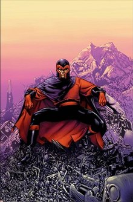
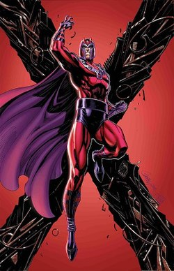
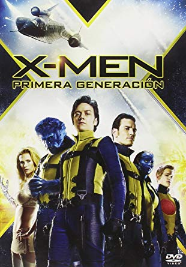

MAGNETO (X- MEN)
Magneto (Erik Lehnsherr) is a fictional character appearing in American comic books published by Marvel Comics, commonly in association with the X-Men. Created by writer Stan Lee and artist Jack Kirby, the character first appears in The X-Men (cover-dated Sept. 1963) as the archenemy of the X-Men.RISE OF MAGNETO
Magneto's experiences surviving Nazi Germany, Auschwitz, and Vinnytsia would shape his outlook on the situation that mutants face in the Marvel Universe. Determined to keep such atrocities from ever being committed against mutantkind, he is willing to use deadly force to protect mutants.He would believe that mutants will become the dominant life form on the planet and would set about either creating a homeland on Earth where mutants could live peacefully, or conquering and enslaving humanity in the name of mutantkind.Magneto is captured by the Stranger, a powerful alien being, whom he initially thought was another powerful mutant. The Stranger encases Magneto and Toad in a special cocoon and spirits them away to another planet, the Stranger's laboratory world.
POWERS AND ABILITIES
Magnetic Flight
Magneto flying on magnetic fieldsMagneto can fly by gliding on the magnetic fields he creates, or by having metal on him and moving with it. Alternatively, he can also draw himself to metal, as he did board a moving train.
Magnetic Shield
Magneto is able to conjure a vast shield of magnetic energy, which the X-Men were unable to penetrate, forcing Quicksilver and Mystique to instead resort to reasoning with him.
Magnetokinesis
Magneto is an immensely powerful mutant, easily one the greatest on the planet;thus far, only
Phoenix and Apocalypse have been shown to be stronger. He is capable of generating and manipulating all forms of magnetism to achieve a variety of grandiose and devastating effects.
ADDITIONAL SKILLS
Magneto has many other skills. He is a genius with competence in various fields of advanced science, especially in genetic manipulation, particle physics, engineering, and other fields of technology. He has engineered advanced weaponry, space stations, superpowered humanoid lifeforms, devices that generate volcanoes and earthquakes, that block telepathy, and that can nullify all mutant powers across a few miles except for his own.He has promptly reconstructed such computerized devices from memory.He has bio-engineered new species including the Savage Land Mutates, and, using Deviant technology, Alpha the Ultimate Mutant.He is fluent in many human languages and once single-handedly deciphered the unknown language of a lost civilization. He possesses extraordinary skill in "reading" the microexpressions on others' faces and sensing what they are thinking and feeling, whether they are lying, fearful, etc. a skill which he refers to as "taking your enemy's measure". He also is a master strategist and tactician with extensive combat experience, and has often been successful in single-handed combat against entire groups of superhuman adversaries. He also has some military training in hand-to-hand combat and has been shown to be effective with his fists, but he prefers to use his powers when in combat situations.
GALLERY
SMALL CLIP ON MAGNETO
X-Men: Apocalypse is a 2016 American superhero film directed and produced by Bryan Singer and written by Simon Kinberg from a story by Singer, Kinberg, Michael Dougherty, and Dan Harris. The film is based on the fictional X-Men characters that appear in Marvel Comics and is the ninth installment in the X-Men film series. It is the sequel to X-Men: Days of Future Past and stars James McAvoy, Michael Fassbender, Jennifer Lawrence, Oscar Isaac, Nicholas Hoult, Rose Byrne, Tye Sheridan, Sophie Turner, Olivia Munn, and Lucas Till. In the film, the ancient mutant En Sabah Nur / Apocalypse awakens in 1983 and plans to wipe out modern civilization and take over the world, leading the X-Men to try to stop him and defeat his team of mutants.
X-Men: First Class (stylized onscreen as X: First Class) is a 2011 superhero film based on the X-Men characters appearing in Marvel Comics. The fifth installment in the X-Men film series, it was directed by Matthew Vaughn and produced by Bryan Singer. The film is set primarily in 1962 during the Cuban Missile Crisis, and focuses on the relationship between Professor Charles Xavier (James McAvoy) and Erik Lehnsherr / Magneto (Michael Fassbender), and the origin of their groups—the X-Men and the Brotherhood of Mutants, respectively, as they deal with the Hellfire Club led by Sebastian Shaw (Kevin Bacon), who is bent on world domination. The film co-stars Rose Byrne, January Jones, and Oliver Platt, and also introduces Nicholas Hoult and Jennifer Lawrence, who, like McAvoy and Fassbender, reimagine popular characters from the franchise (Beast and Mystique) already established in the original trilogy.
X-Men: Days of Future Past is a 2014 superhero film directed and produced by Bryan Singer and written by Simon Kinberg from a story by Kinberg, Jane Goldman, and Matthew Vaughn. A British-American venture, the film is based on the fictional X-Men characters that appear in Marvel Comics and is the seventh installment of the X-Men film series, the sequel to both X-Men: The Last Stand (2006) and X-Men: First Class (2011). The story, inspired by the 1981 Uncanny X-Men storyline "Days of Future Past" by Chris Claremont and John Byrne, focuses on two time periods, with Wolverine traveling back in time to 1973 to change history and prevent an event that results in doom for both humans and mutants. The film features an ensemble cast, including Hugh Jackman, James McAvoy, Michael Fassbender, Jennifer Lawrence, Halle Berry, Anna Paquin, Ellen Page, Peter Dinklage, Ian McKellen, and Patrick Stewart. Vaughn had directed X-Men: First Class and was set to return in Days of Future Past before leaving for Kingsman: The Secret Service. Thus Singer, who had directed the first two X-Men films, made his return as a director, and brought along most of the crew from those productions. With a budget of $205 million, principal photography began in Montreal, Quebec in April 2013 and concluded in August the same year, with additional filming and pick-ups taking place in November 2013 and February 2014. Twelve companies handled the visual effects.